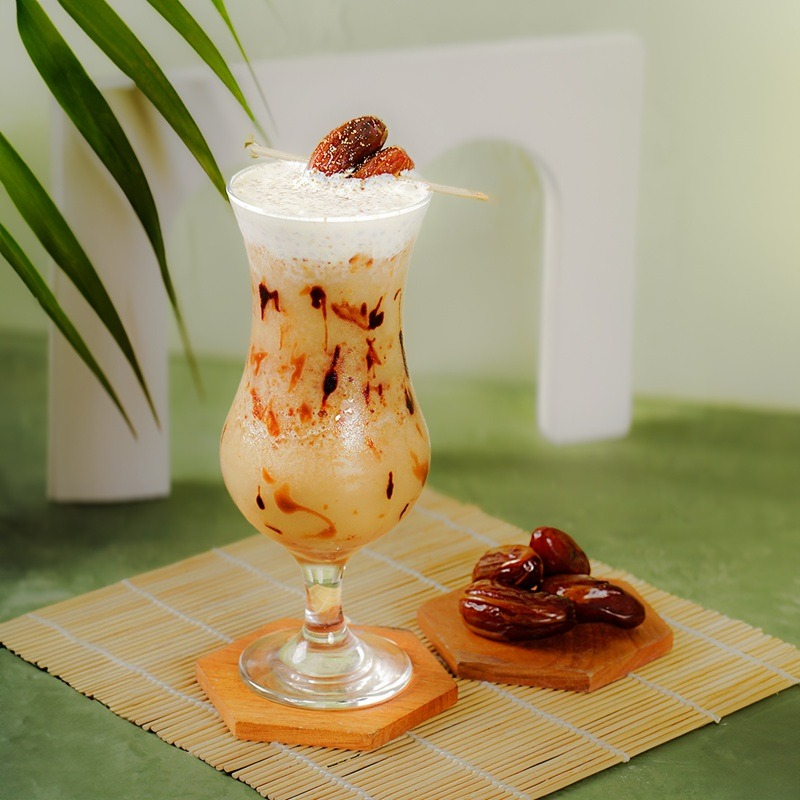

Halo Toffin Customer,
Terima kasih sudah berbelanja di Toffin. Berdasarkan produk ingredients yang kamu beli, kami sudah menyiapkan inspirasi recipe spesial untuk kamu.

Recipe ini dibuat otomatis oleh Toffin AI berdasarkan ingredients yang kamu beli dari Toffin.
Tambahkan lebih banyak varian ingredients untuk membuka lebih banyak kemungkinan resep yang kreatif dan sesuai dengan kebutuhan bisnismu.
© 2026 Toffin Indonesia